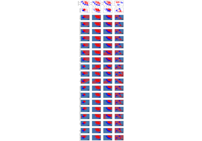

skada.DiscriminatorReweightDensity
- skada.DiscriminatorReweightDensity(base_estimator=None, domain_classifier=None)[source]
Discriminator re-weighting pipeline adapter and estimator.
see [1] for details.
- Parameters:
- base_estimatorsklearn estimator, default=None
estimator used for fitting and prediction
- domain_classifiersklearn classifier, optional
Classifier used to predict the domains. If None, a LogisticRegression is used.
- Returns:
- pipelinesklearn pipeline
Pipeline containing the DiscriminatorReweightDensity adapter and the base estimator.
References
[1]Hidetoshi Shimodaira. Improving predictive inference under covariate shift by weighting the log-likelihood function. In Journal of Statistical Planning and Inference, 2000.
Examples using skada.DiscriminatorReweightDensity

Plot comparison of DA methods